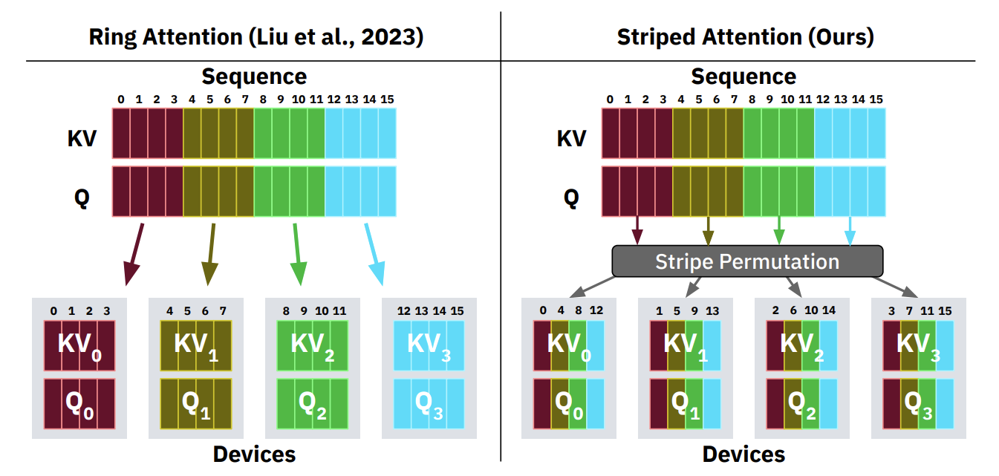

Why 1M Tokens?
Document Analysis
Legal contracts, research papers, full codebases in a single pass. Chunking creates seam artifacts; full context does not.
Agentic Loops
Multi-step agent traces accumulate tool outputs, memory scratchpads, and prior turns. Context grows with task complexity.
Multimodal
A single high-res video frame or interleaved image sequence easily reaches tens of thousands of tokens.
KV Cache: What It Is and Why It Costs
- Q — what this token is looking for
- K — what every other token contains
- V — the actual content of those tokens
The Cache
Autoregressive decoding reuses K and V from all prior tokens. Without caching: O(n²) per step. With caching: O(n) per step. New tokens only compute one new K, V pair.
The Cost
Every token, every layer, every head needs a K and V vector stored in GPU SRAM. At long sequences this becomes tens of gigabytes per request.
KV Cache Memory: Interactive Calculator
Llama-3.1-8B: 32 layers, 8 KV heads, head dim 128, FP32 — 0.25 MB per token
| Sequence | KV Cache | Note |
|---|---|---|
| 1,000 | 0.25 GB | Fits easily |
| 10,000 | 2.5 GB | Comfortable |
| 128,000 | 32 GB | Full H100 |
| 1,000,000 | 250 GB | 3× H100s, KV only |
Reference
An H100 SXM has 80 GB HBM total. A single 1M-token request exceeds 3 H100s of memory just for the KV cache — before model weights.
Drag the slider to explore memory cost at different sequence lengths
Prefill: The Quadratic Wall
Prefill ingests the full prompt before generating any output token. Attention is O(n²): every token attends to every other token.
Attention score computations per head per layer (log scale)
| Context | Ops (per head/layer) | Relative |
|---|---|---|
| 4K tokens | 16M | 1x |
| 128K tokens | 16.4B | 1,024x |
| 1M tokens | 1T | 62,500x |
Real Impact
A 1M-token prompt can take 30+ minutes to prefill on hardware that handles 4K tokens in under a second. Prefill is compute-bound (unlike decoding, which is memory-bandwidth-bound). Quadratic scaling makes it the dominant bottleneck.
Two Paths to Efficient Long-Context Inference
Lossless Exact
Mathematically identical output to full attention. Distribute the work, not reduce it.
- Ring Attention: sequence sharded across a GPU ring
- Striped Attention: causal-aware interleaved partition
- Context Parallelism in vLLM, SGLang
Lossy Approximate
Compute a subset of attention. Trade small accuracy loss for large efficiency gain.
- NSA: hierarchical sparse attention (DeepSeek)
- SwiftKV: skip later prefill layers (Snowflake)
- StreamingLLM: attention sinks + sliding window
Lossless Approaches
Context Parallelism: exact attention distributed across devices
Context Parallelism: Split Sequence, Share KV
Concrete Savings (Llama-3.1-8B, 128K)
1 GPU: 32 GB — impossible once weights are loaded
4 GPUs: 8 GB each — fits comfortably
8 GPUs: 4 GB each — room for larger batches
The Global Softmax Problem
To compute GPU 1's final output, it needs all keys, not just its own:
Softmax requires the sum of exponentials across the entire sequence. GPU 1 only holds K₁. Naive block-split gives wrong denominators and incorrect outputs.
Ring Attention's Answer
Rotate KV blocks around a ring. Accumulate partial softmax statistics using an online algorithm that can merge blocks in any order, exactly.
Ring Attention Lossless
Q blocks (blue) stay fixed. KV blocks (red) rotate clockwise each round.
Algorithm
1. Each GPU holds a fixed query block Q_i.
2. Over N-1 rounds, KV blocks pass clockwise: GPU i sends to GPU i+1, receives from GPU i-1 simultaneously.
3. Each GPU computes blockwise attention against the current KV block, accumulating partial results.
4. After N-1 rounds, every GPU has seen all KV blocks. Output is exact.
Key Insight
Attention between a query block and any set of KV blocks can be computed in any order, as long as the softmax statistics (running max, sum of exp, weighted output) are correctly merged after each block.
Online Softmax: Why the Math is Exact
Standard softmax cannot be split. Online softmax maintains running statistics that can be merged in any order with zero error.
Why It Works
Softmax scores depend on the global maximum logit m*. When a new block arrives with a higher max, we rescale prior partial sums by exp(m_old - m_new). This corrects the shifted denominator exactly, with no approximation.
The Sequential Constraint
No GPU can finalize its output until all N-1 KV blocks have passed through. Round k feeds into round k+1. This is the fundamental latency cost of Ring Attention.
Result
Output is bit-for-bit identical to full single-device attention. Zero approximation. The only cost is KV block communication overhead.
Communication Hidden by Computation
While GPU i computes attention on the current KV block, it simultaneously sends that block to GPU i+1 and receives the next block from GPU i-1.
| Compute time | \(\dfrac{4dc^2}{F}\) |
| Transfer time | \(\dfrac{4cd}{B}\) |
Compute scales as c², communication scales as c. The condition is easy to satisfy: block size only needs to exceed the compute-to-bandwidth ratio.
Memory Per GPU: Always 6 Blocks
Each GPU stores exactly:
1 query block (stationary)
2 current K, V blocks
2 incoming K, V blocks (buffered)
1 output accumulator
Scaling Law
If a model supports context s on 1 GPU, Ring Attention supports N·s on N GPUs with identical model flop utilization. Demonstrated beyond 100M tokens without approximation.
Striped Attention: Fixing Causal Workload Imbalance Lossless
Causal attention masks all future tokens — halving total operations in theory. But Ring Attention with contiguous blocks cannot exploit this.
The Imbalance
With contiguous blocks, some rounds give GPU A entirely masked interactions (zero work, finishes instantly) while GPU B gets entirely unmasked (full work). GPUs synchronize each round, so the slowest sets the pace. The 2x savings disappears.

Figure 4, Brandon et al. 2023. Round 2: Ring Attention has entirely masked (white) blocks on some devices; Striped maintains balanced half-filled patterns on every device every round.
Striped Attention: Round-Robin Token Assignment
The Fix
Assign tokens by position modulo N. For N=4:
Every GPU holds tokens uniformly distributed across the full sequence. Its causal mask is roughly half-filled on every round.
Why Exact
Attention is permutation-equivariant in the key-value dimension. Permute tokens before splitting, unshuffle the output after. Identical to full causal attention.
| Hardware | Sequence | Speedup over Ring |
|---|---|---|
| 8x A100 | 256K | 1.45x |
| 16x TPUv4 | 786K | 1.65x |
Trend
Speedup grows with sequence length and degree of sequence parallelism. At 786K tokens on 16 TPUs, 1.65x translates directly to reduced training cost.
Lossy Approaches
Reduce computation itself rather than distributing it
Native Sparse Attention (NSA) DeepSeek 2025
First sparse attention method deployed in production at scale, in DeepSeek-V3.2. Unlike prior sparse methods applied post-hoc at inference, NSA is trained from scratch with sparse attention.
The Core Tension It Solves
Prior methods either: (a) reduce theoretical FLOPs but scatter memory accesses with no real speedup, or (b) apply sparsity at inference only, introducing architectural mismatch. NSA is hardware-aligned and natively trainable.
Arithmetic Intensity
Prefill and training: compute-bound (high arithmetic intensity). Decoding: must reload full KV cache per step, memory-bandwidth-bound. NSA is co-designed for both regimes.

Figure 2, Yuan et al. 2025. Three parallel attention branches: compressed (coarse global), selected (fine important blocks), sliding window (local). Green = computed, white = skipped.
NSA: Three Branches, One Output
1. Compressed (Coarse)
Consecutive blocks aggregated into compressed representations by a learnable MLP. Overlapping strides prevent gaps. Captures broad global patterns without O(n²) cost.
2. Selected (Fine)
Compression scores reused to rank uncompressed blocks. Top-k blocks (not individual tokens) selected. Blockwise selection maintains contiguous memory access.
3. Sliding Window (Local)
Fixed window of recent tokens, isolated in its own branch. Separation prevents "shortcut learning" where local patterns drown out complex global ones.
Output Merge via Gating
Three branch outputs combined by a learned gate. Scores for block selection are aggregated across GQA groups so all heads within a group select identical blocks — the key that makes the kernel design viable: contiguous, predictable memory access patterns.
NSA: Group-Centric Kernel and Results
Standard FlashAttention Fails Here
FlashAttention loads contiguous Q blocks into SRAM. Sparse attention forces disjoint KV block fetches per query. Arithmetic intensity collapses; GPU becomes memory-bound.
Group-Centric Kernel (Triton)
Flips the strategy: load all query heads within a GQA group simultaneously, then sequentially fetch the contiguous KV blocks they share. All heads in a group are guaranteed to select identical blocks, so no redundant fetches occur.
Algorithm + Kernel Co-Design
Blockwise selection ensures contiguous memory. GQA score aggregation ensures all heads agree on the same blocks. Together they maintain FlashAttention-level arithmetic intensity on sparse patterns.
| Metric (64K context) | NSA vs Full Attn |
|---|---|
| Training throughput | 9x faster |
| Decoding speed | 11.6x faster |
| General benchmarks | matches or exceeds |
| Long-context retrieval | perfect accuracy |
| Chain-of-thought math | exceeds Full Attn |
Why Quality Improves
Sparse patterns learned natively during pretraining: the model discovers which tokens genuinely matter. Irrelevant tokens excluded by the model itself, reducing noise.
SwiftKV: Later Layers Converge Snowflake 2024
The Observation
As tokens travel deeper into the model, their hidden states stop changing significantly. By the midpoint, each token's representation is already highly similar to its final-layer state.
What Gets Skipped
For prompt tokens in layers l+1 to L: attention, MLP, Q and output projections all skipped. Only K and V projections run, using h^(l) as input.
Decoding is Unchanged
During decoding (generating new tokens), all L layers are used. SwiftKV only skips work during prefill of prompt tokens. Per-token generation quality is not affected.
AcrossKV: Optional Memory Variant
Instead of a separate KV cache per skipped layer, AcrossKV shares one KV cache across several consecutive layers. Compresses memory footprint further at the cost of slightly more approximation.
Where It Fits
Ideal for RAG and summarization: long prompts, short outputs. Prefill dominates total time; SwiftKV cuts 25-50% of that compute.
SwiftKV: Recovery via Lightweight Distillation
Knowledge Distillation
The architectural change initially drops accuracy. Recovery: freeze the original model as "teacher," fine-tune only the KV projection weights of skipped layers — less than 10% of total parameters. Train on fewer than 1B tokens. Completes in hours, not weeks.
Deployment: Zero Infrastructure Changes
SwiftKV only changes which data feeds into which projection matrix, not the operations themselves. Drops into vLLM and SGLang without custom kernels or changed serving stacks.
| Metric | Result |
|---|---|
| Prefill compute reduction | 25–50% |
| Aggregate throughput | up to 2x |
| Time per output token | 60% lower |
| Normalized inference throughput | 560 TFlops/GPU |
| Llama-3.1-70B tokens/sec | 16K tokens/s |
| Benchmark quality loss | less than 2% |
| Model size range tested | 3B to 405B |
Open Source
Available as the Arctic Inference plugin for vLLM from Snowflake. Production-deployed in Arctic model serving.
StreamingLLM: Infinite Context via Attention Sinks ICLR 2024
Window Attention Fails
Keep only the most recent N KV states. Constant memory. But once sequence exceeds cache size, model collapses: perplexity explodes. Absolute position embeddings no longer match.
Attention Sinks
Softmax requires scores to sum to 1. When no token is a strong match, the model dumps spare attention onto initial tokens as a "sink," even if semantically irrelevant. Replacing them with "\n" preserves the effect: position matters, not content.
The Fix
Keep the first 4 tokens (sinks) permanently in the KV cache alongside a rolling window of recent tokens. Assign position indices relative to cache slots, not original sequence positions.

Figure 4, Xiao et al. 2023. KV cache = attention sinks (first 4 tokens) + rolling window. Position numbering restarts within the cache, not the global sequence.
| Result | |
|---|---|
| Max supported context | 4M+ tokens |
| vs sliding window recompute | 22.2x speedup |
| Fine-tuning required | None |
Industry Deployment
How production systems combine these ideas
SGLang: Chunked Pipeline Parallelism
Serving a 100-layer model across 4 servers on a 100K-token prompt: how do you keep all servers busy?
Pipeline Parallelism (PP)
Layer groups split across servers over slow inter-server links. Server 1: layers 1-25, Server 2: 26-50, etc. Naive PP: Server 1 processes the full 100K prompt while Servers 2-4 sit completely idle. This is the pipeline bubble.
Chunked PP: The Fix
Slice the prompt into 4K-token chunks. Server 1 processes chunk 1 through layers 1-25, passes to Server 2, immediately picks up chunk 2. By the time chunk 1 reaches Server 4, all four servers work simultaneously on different chunks.
Context Parallelism (CP) Within a Server
Inside each server, GPUs use NVLink (~900 GB/s) to run Ring/Striped Attention on each chunk in parallel. NVLink makes the per-step KV rotation cheap. Cross-server PP uses slower InfiniBand links but avoids the KV rotation cost entirely.
Hybrid CP x PP
Within each server: CP (NVLink) for sequence splitting. Across servers: Chunked PP for model depth. Software topology matches hardware topology. GPUs never idle, never OOM.
vLLM vs SGLang: The Current Tension
vLLM: Betting on Context Parallelism
Ring and Striped Attention as the primary strategy. Issue #22693 vs #34018: Helix (NVIDIA, 2025) proposes replacing the ring topology with All-to-All communication, where every GPU sends its partial attention output and log-sum-exp factor to every other GPU simultaneously, reducing per-round latency.
- Ring/Striped enabled by default for long-context serving
- Day-0 vLLM support for DeepSeek NSA
SGLang: Betting on Pipeline Parallelism
Chunked PP favors model-layer sharding across servers. Maps better to cluster topologies where inter-server bandwidth is constrained relative to intra-server NVLink speed.
- CPP eliminates pipeline bubbles at long context
- CP within servers over NVLink remains fast
The Convergence
Both teams acknowledge the future is hybrid CP x PP. The debate is which dimension to optimize first given today's hardware. The correct answer depends on the interconnect: NVLink makes CP cheap within a server; InfiniBand makes PP cheaper across servers.
The Quality-Efficiency Frontier
| Method | Loss | Gain | Best Workload |
|---|---|---|---|
| Ring Attention | None | Nx memory | Training, exact inference |
| Striped Attention | None | 1.65x over Ring | Causal LM training |
| NSA | Minimal | 9-12x at 64K | Pretraining, long decode |
| SwiftKV | Less than 2% | 2x throughput | RAG, summarization |
| StreamingLLM | Moderate | 22x vs recompute | Infinite streaming |
Open Problems
- Optimal CP x PP hybrid scheduling
- NSA sparsity patterns across task types
- SwiftKV: optimal layer cutoff per model
- Helix All-to-All vs ring topology tradeoffs
- Attention sinks in non-standard training regimes
The Goal: Achieved?
For most practical workloads: yes. A 128K-token request that once required 30+ minutes of prefill and 32 GB of KV cache now runs at practical latency on standard clusters. The 1M-token frontier is still being pushed.
References
- Liu et al., Ring Attention with Blockwise Transformers for Near-Infinite Context, ICLR 2024 · code
- Brandon et al., Striped Attention: Faster Ring Attention for Causal Transformers, 2023
- Yuan et al., Native Sparse Attention: Hardware-Aligned and Natively Trainable Sparse Attention, DeepSeek 2025
- Qiao et al., SwiftKV: Fast Prefill-Optimized Inference with Knowledge-Preserving Model Transformation, 2024 · Arctic Inference plugin for vLLM
- Xiao et al., Efficient Streaming Language Models with Attention Sinks, ICLR 2024
- LMSYS, Chunked Pipeline Parallelism, Blog January 2026
- vLLM Context Parallel Deployment Docs
- vLLM engineering discussion: #22693 vs #34018 (Ring vs All-to-All CP)
Thank You
Questions?